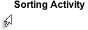

Welcome to the Overview of Quality Matters!
Welcome to the Overview of Quality Matters!Applying the Quality Matters Rubric
Introduction
Welcome to the Overview of Quality Matters!
Quality Matters is an inter-institutional peer review process that is dedicated to the continuous improvement of online course design. It is important to understand the main elements of the Quality Matters program. Basic elements about Quality Matters are introduced in this module and will give you a good idea of what it is all about.
Over the next two weeks, you will become familiar with the QM Rubric, 2011-2013 Edition as you Build Your Blended Course.
 The rapid growth of online education has forced institutions, faculty, and students to quickly adopt and adapt to this new mode of education. Given its recent evolution, there are people who continue to question the quality of education achieved through the online format.
The rapid growth of online education has forced institutions, faculty, and students to quickly adopt and adapt to this new mode of education. Given its recent evolution, there are people who continue to question the quality of education achieved through the online format.
In an effort to address the concerns about quality online education, the U.S. Department of Education's Fund for the Improvement of Post-Secondary Education (FIPSE) awarded a three year grant in 2003 to MarylandOnline, Inc., Maryland's higher education distance learning consortium, as a means to begin to address the issue of online course quality assurance. The Rubric and materials you are using in this course evolved from that grant, originally titled Quality Matters: Inter-Institutional Quality Assurance in Online Learning.

Over time, Quality Matters has become a self-supporting, non-profit organization and uses the following underlying principles to guide its work:
Continuous
Centered
Collegial
Collaborative
Integral to the QM process is the belief that there are many factors that affect the quality of an online course. Click on each piece of the "Online Course Quality " pie in the Charts Activity below. Click on the Charts Activity and it will open in a new window. Once you have reviewed all the pieces of the pie chart, close the window to return to this page.
Of all the list of factors listed, QM's work addresses only one aspect of online course quality -- course design. The QM Program does not address in detail any of the other factors. Most specifically, it does not address anything related to course delivery (how the instructor actually teaches the course). The evaluation of course delivery resides within each institution itself.
One of the key QM concepts is the distinction between course design and course delivery. QM recognizes that this is a fine line, but course design is the primary emphasis during a review. Below are the definitions to help you understand this distinction:

It might also help to look at the two examples below, one from real life and one from an online classroom:
|
|
Design |
Delivery |
|
Example 1: |
You prepare for ("design") a party by sending invitations, shopping, cleaning, preparing the pool or the grill, etc. |
The "delivery" phase begins when the guest rings the doorbell. Your plans may or may not work out (a guest spills wine, food runs out, etc.). |
|
Example 2: Online Classroom |
You plan your discussion board by telling students how they should participate and how they can expect you to participate; how grades or points will be assigned. |
Delivery begins when the students arrive: how and when your actually participate in the discussion; the quality and timeliness of student responses, etc. |
Practice the difference between 'design' and 'delivery' in the Sorting Activity below. Click the Sorting Activity title to get started.

During a course review, Quality Matters (QM) is not looking for "just good enough." Rather, QM is looking for above average -- approximately 85% or B+. Although this is somewhat subjective, the basis for the decision is based on the evidence found in the course compared to the standard and its annotation. Standards are based in the research literature and widely accepted standards about effective online learning.
Peer reviewers are all experienced online faculty who have attended QM training and learned to apply the rubric. QM relies on the experience, expertise and common sense of its faculty reviewers to conduct reviews fairly and consistently and to judge whether the course meets expectations at the "85%" standard.
 The emphasis on above average is also the reason that QM primarily recommends reviewing "mature" courses -- those that have been taught at least two semesters. If the course has been taught over several semesters, the faculty developer has had time to "fine tune" the course and to make management and content improvements.
The emphasis on above average is also the reason that QM primarily recommends reviewing "mature" courses -- those that have been taught at least two semesters. If the course has been taught over several semesters, the faculty developer has had time to "fine tune" the course and to make management and content improvements.
New QM reviewers often have many questions about the 85% standard and often find it confusing. There are actually two 85% factors to consider during a QM review:
Here's an example: A Chemistry course might have 15 course-level learning objectives. Of these, two are not measurable (the other 13 are measurable). Most reviewers would decide YES, this meets Standard 2.1. Reviewers would then write strong recommendations for how to improve the two weak objectives.
QM is admittedly a subjective process and making decisions about whether a standard is or is not met can be difficult. QM provides extensive annotations and training for its reviewers, but there are likely to be many instances of differing opinions. We know that everyone wants a "right/wrong" answer, but frequently, that's just not possible. Online courses are very complex and likely to be more shades of gray than absolute. And that's the reason QM "hires" three experienced online faculty members to serve on the peer review team. QM relies on the collective experience, knowledge and common sense of the team to arrive at the best possible feedback for the course instructor.
This lesson is an example of one module from the Applying the Quality Matters Rubric workshop. At this point participants would be directed to return to the workshop and complete a series of activities (discussions, wikis, quizzes) to complete the module.
For more information....
Quality Matters is a "leader in quality assurance for online education and has received national recognition for its peer-based approach and continuout improvement in online education and student learning". QM has developed Rubrics for Higher Education, K-12, and Publishers.
To learn more about Quality Matters visit the QM website.